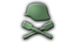
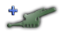

Blackshirt assault battalion. Companies made up of Blackshirts.
Engineer Supprot Company. Help in crossing rivers and building fortifications

Field Hospital. Used to treat wounded and sick soilders. Allows some tickback, leading the less experience loss from casualties.

Jungle Pioneers.

Logistics Suport company. Reduced the logistical strain a division has.

Long Range Patrol.

Maintence Suport Company. Help reduce attrition from equipment breackdown and increased the amount of equipment captured by a division.

Military Police. Increases the suppression of a division.

Pioneers Suport Company.

Rangers.

Recon Suport Company. Increase the speed of a division.

Self Propelled Super Heavy Artillery.
Signal Suport Company. Decreases the time a division needs to reinforce in a battle.

Sturmtruppe Suport Company.
Super heavy artillery.
Anti-Air Suport Company. The company version of a Anti-Air battalion.

Anti-Tank Suport Company. The company version of a Anti-Tank battalion.

Artillery Suport Company. The company version of a Artillery battalion.

Rocket Artillery Suport Company. The company version of a Rocket Artillery battalion.

Winter Logistics Suport Company.